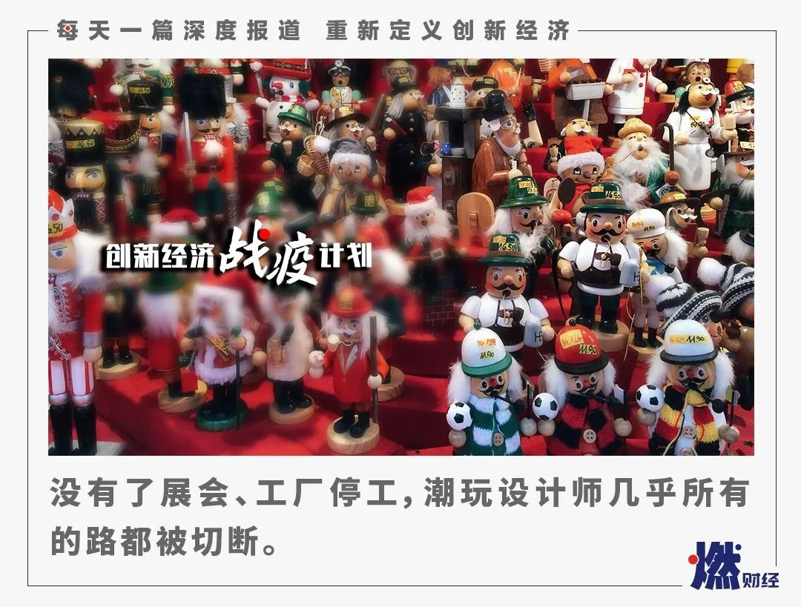
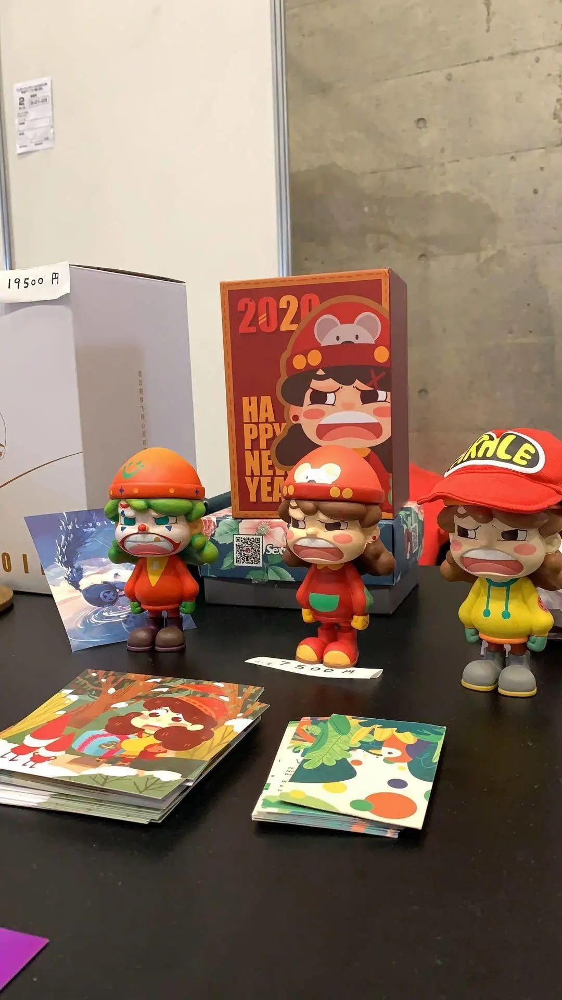
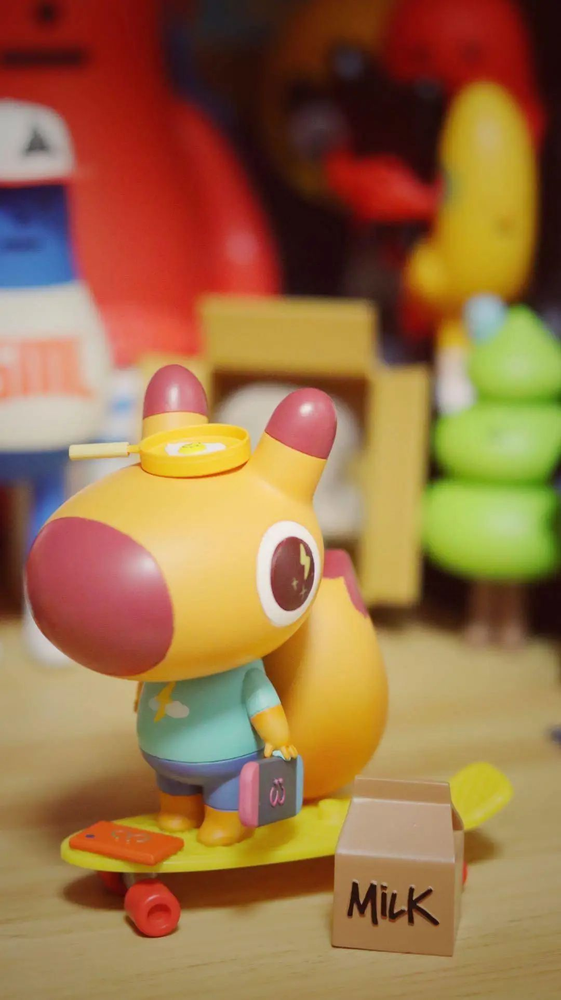
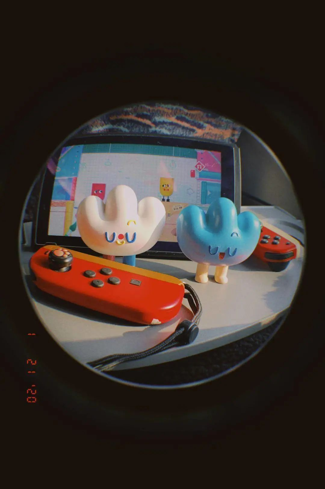
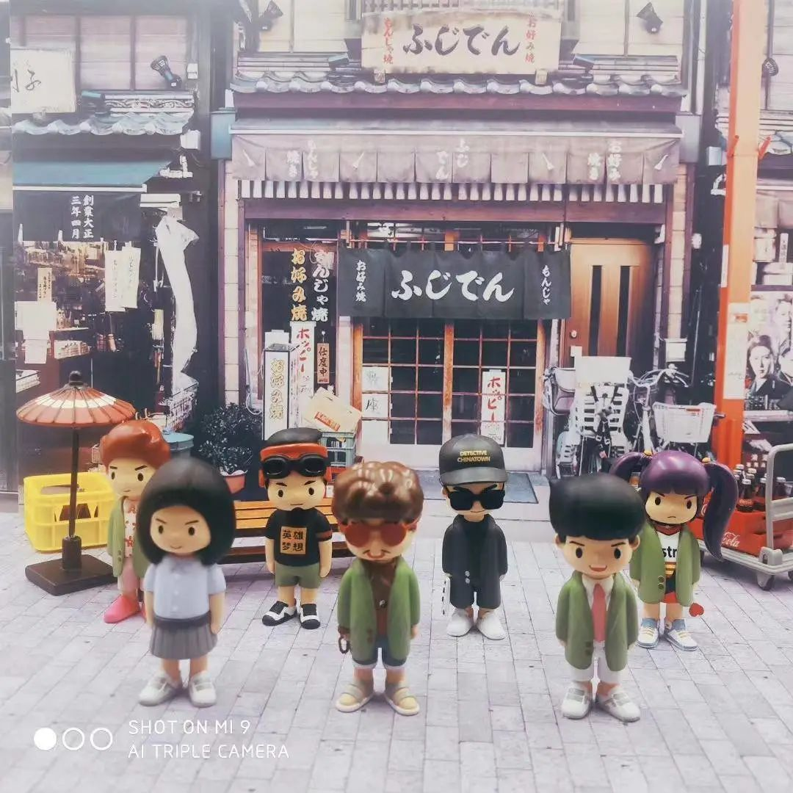
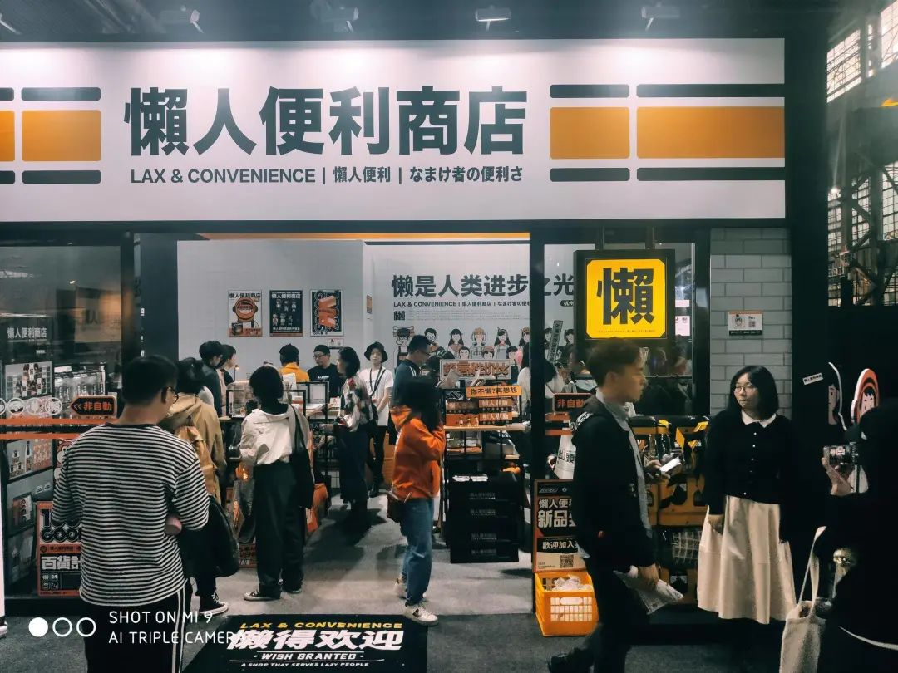

疫情之下的我们
原文链接 备份链接 这题来自Voicer，他们采访了包括我们在内的6位创意行业内不同分支的同侪，分享了这次疫情对他们的影响以及他们相应的思考和应对策略。 深度专访：疫情之下的创意从业者，你们还好吗？ 而在这个心情极其复杂的超长春节里，我 …

《创新经济战疫计划》，是燃财经在新型肺炎疫情期间推出的特别栏目，关注创新经济企业遇到的新难题、商讨应该采取的新对策，希望能够帮助中小企业一起战胜挑战、把握机会。
作者 | 闫丽娇
编辑 | 周昶帆
2月9日，大V最终决定去参加在日本东京举办的Wonder Festival（WF）手办模型展。他一个人拖着一行李箱的玩具，没有让同事一起去，也几乎没有带宣传物料。
在东京参展的人，70%都戴上了口罩。截至2月8日，日本新冠肺炎确诊达到89例，也成为了中国以外疫情比较严重的国家之一。而WF是世界上规模最大的手办模型展，距今已经有36年历史，它是玩具创作者和爱好者每年必须要参加的展会。这也是大V冒着疫情风险不得不去东京参展的原因之一。
大V在WF订了3个展位，原计划是一行十几个人，除了玩具以外，他们还准备了周边及设计师手绘明信片。明信片已经设计完成，但因为找不到打印厂，连同周边和宣传物料都没有制作出来。尽管大V去参了展，但最终效果可想而知，并不怎么理想。
突如其来的疫情让国内很多展会取消或延期，而那些依然举办的各类国际展会，因中国参展商的缺席也受到了极大影响。
去年8月的北京潮玩展（BTS），有的粉丝甚至一大早5点就过来排队。而今年上半年，国内应该不会再看到这类景象了。2月25日，原定4月举办的上海WF宣布延期至国庆假期，退票通道已经开启。
另外，今年上半年还有两个比较大的国际性玩具展——泰国Thalland Toy Expo玩具展（TTE）和2020上海国际潮流玩具展（STS）。上海STS宣布延期至6月，泰国TTE目前还未推迟。但参展的设计师们也会担心安全问题。对参展方来说，能不能顺利参加，不仅取决于目的地的疫情状况，还取决于国内工厂的复工程度。如果工厂把产品按期生产出来，展会又不延迟，大V他们至少还能赶得上。
这次疫情给潮玩行业带来了一系列影响。短时间内是相关商家的现金流压力，紧接着产生了连锁反应。对于潮玩行业，尤其是对独立设计师来说，展会销售在销售中占了很大一部分。潮玩设计师通过展会精准获客，将潜在买家拉入微信群，再通过社群方式售卖后续产品。而现在，展会没有了，就意味着重要的源头被切断了。
再加上制造工厂停工、涂装工厂停工，从产品生产到销售，所有的环节都是一环扣一环，每一环节都受到影响，对潮玩设计师来说，其实几乎是切断了所有的路。
***潮玩生意***
对大V来说，他也可以选择不去参展。
不去就意味着前期投入的展位费、搭建费和玩具销售额等等就损失掉了。当然，这是能估算出来的，而新合作等算不出来的潜在损失，更加重了他的压力。在评估过风险后，他决定自己一个人去。

JumpWorks（玩物复苏）在日本WF的参展作品
大V是玩具圈里一个典型地把爱好变成职业的人，1985年出生的他是个资深玩具迷，以前他有一份药企工作，和玩具完全不沾边。在成长的过程中，一些动漫和玩具深深影响了他。
1989年，变形金刚开始在北京电视台播出。其后，周边玩具在京大卖。1990年，日本漫画家井上雄彦的知名漫画《灌篮高手》开始连载。对于85后、90后这一代人，日漫IP衍生的玩具周边陪伴了他们的年少时代。
“基本是从初中开始，适合当时年龄段的玩具就很少了。最多是拼装玩具，还能让人觉得难度高点。从小学跳到大学，甚至上班以后，玩玩具中间有个断档期。那段空白期，男生们都在忙着打篮球、上网吧。”大V回忆。
那段时间，有收藏意识的人还能留下几件玩具，大部分玩具干脆被家长直接扔掉。工作以后，他们再想回过头找到这些东西时，能存下来的就非常少了。
一代人成长起来，能够买得起小时候买不起的玩具，除了收藏爱好外，也不排除报复性消费，弥补那些曾经被家长扔掉玩具的自尊心。小时候有的，长大了得有，小时候没出现过的，长大了也得有。
在玩的过程，国内逐渐形成了很多圈子，于是多了很多潮玩批发商，批发商又衍生出无数零售商。2016年，大V开了一家淘宝店，专卖手办和雕像，一直把店铺做到两个皇冠，是淘宝当时比较大的几个二次元雕像店之一。
以玩起家、以兴趣聚拢创业的人渐渐多了起来。“与其说天天玩这个，还不如自己就做这个工作，把兴趣当作事业。有时候上班不一定是你的爱好，你可能动力没那么足。”大V干脆辞掉了工作，专职做玩具生意。那之后，他的工作重心，变成了去世界各地跑展学习，跟设计师打交道，签代理、谈合作。
去年，他签了自己的设计师，有了自己的品牌，然后把产品推向日本、台湾、香港、泰国等市场。同时，大V还开了自己的实体店。然而这次疫情对线下实体店的打击同样是致命的。商场虽然开着，80%商户都处于关闭状态。春节期间，大V试营业了两天，结果一个人都没有。他最后只能无奈地把店铺关掉。
然而更大的影响来自所有线下玩具展的停办和延期。
***去参展***
在潮玩行业，新人设计师出道，非常仰仗线下玩具展，这要从潮玩设计师产品的销售渠道说起。
潮玩的线下销售渠道，主要包括全球每年大大小小的展会以及合作的实体店；线上渠道则包括微信粉丝群、公众号、各类电商、众筹平台等。在这其中，玩具展是最重要的。
在玩具展上，设计师能在线下扩充自己的粉丝群，尤其是还没有名气和粉丝基础的新人设计师，可以借由展会完成第一批原始积累。同时，线下积累的粉丝粘性大、对品牌忠诚度高，购买力也更强。
跑展也是增加曝光度的有效手段。足够火、曝光度足够高的品牌，只靠十几个粉丝群，就能完成一款产品的销售。核心粉丝的购买力足够支撑起一款产品的全部线上销售。
 2020年日本WF/受访者供图
2020年日本WF/受访者供图
大V估算过某个知名潮玩品牌的粉丝购买力。每位核心粉丝每年购买正式发售的原价产品就将近2万元，这还不算闲鱼和二手市场收购。大部分限量款产品是多数玩家买不到的。在正式发售前，粉丝要靠抽奖先抽取购买资格，那些没有被抽到的忠实粉丝就会进入二手市场交易。算下来，在一个品牌上，每位核心粉丝每年的消费就不止2万元，能有2倍甚至更多。
对于很多独立设计师来说，除了收入上依赖展会，展会也是他们发掘其他设计师以及和粉丝交流的重要机会。对很多独立设计师来说，线上售卖的本质只是一张照片。潮玩属于典型体验式消费，需要直观地看，实体触摸，促成购买也离不开视觉冲击和冲动因素。大部分线上售卖，品牌针对的都是有限的粉丝群体，而线下展会贡献的则是源源不断的新客流。
制作潮玩的材质大概分几种。偏软的是搪胶，而多数手办用的是PVC材质，还有偏重的树脂。不同的材质决定了不同的玩具会有不同的触感和细腻程度，这是潮玩与其他产品不同的魅力所在，通过触感和色彩，达到玩家与设计者心意相通的效果。
刺球是典型的艺术创作者，毕业于伦敦艺术大学中央圣马丁艺术与设计学院，专业是角色动画。潮玩设计是他的另一爱好，他同时也是The Foxfrank Studio品牌的主理人。他创作的IP“狐兰克”是一只有点呆呆的狐狸，爱好美食、旅行，对生活充满着好奇。这个狐狸潮玩用得就是树脂，尽管有时因为材质原因导致携带时易碎，但他认为触感也是设计者与粉丝的对话方式。树脂的重量感是他想要呈现出来的，但只看照片是无法理解的。

刺球的作品“狐兰克”
从另一个角度看，他也并不认为疫情期间是潮玩线上销售的爆发点。“如果买菜、吃饭都成问题，物流也不便利，玩家可能没有那么多心思去考虑其他消费。”对潮玩，包括其他非刚需娱乐型产品来说，疫情期间的线上消费可能只解决了一小部分问题。
*****工厂复工*****
大V旗下签约设计师小李，是原创IP“森林邮便局”的作者，她现在还是中国传媒大学的学生。
以往每次参展，她都会准备1-2款新品。新品需要提前和工厂预定制作。展会延期，原本还可以通过线上销售，但工厂停工，小李也没有办法了。
国内的潮玩工厂主要位于东莞、深圳一带，很多工人因隔离措施没能及时返工。尽管有个别工厂开始复工，但生产速度远远比不上从前，而且价格也有提升。设计师姜小在工厂复工后，打了两个产品初样，原本两三百的成本直接涨了一倍多。
刺球有批600多件的玩具，去年年底交了订金，本来今年3月就要出货。因为疫情，工厂还没有复工，交付期一直往后拖延。“工厂不是在生产你一个人的货，复工以后也会逐次做，只能等复工再去沟通。”刺球也不知道这批货到底什么时候才能拿到。

刺球的手涂作品
签约设计师和独立设计师、全职设计师和非全职设计师在这次意外中，遭受着不同程度的损失。刺球还有一份工作，能够保证起码的收入来源，而小李因为签约了大V的工作室，能够与公司共担风险，公司也会积极联络其他线上渠道，以及帮她解决工厂的问题。
对于很多初入潮玩行业的人来说，第一个要踩的坑就是工厂。潮玩是特别展现设计师独立意志的创意产品，也许设计师想要的结果工厂领悟了60%，落地到产品上可能只留下30%。除了潮玩制造商，整个制作流程上还有负责给玩具上色的涂装厂，中间环节都有可能出现误差。新设计师不懂工厂套路，光前期准备阶段，就有可能会损失几十万成本来“交学费”。
2017年，国内潮玩市场开始火爆起来，成立于2010年的泡泡玛特让潮玩被更多人关注。很多潮玩设计师开始涌现，但发展到今天，还是以出道一年甚至半年的设计师为主。大V也曾办过线下展会，80多家参展品牌，一年以上的设计师只占到20%。
Luke和很多设计师一样，因为喜欢玩具把自己变成了兼职设计师，2019年潮玩市场的爆发让她看到创业的希望。今年年前，Luke从上家单位辞了职，对人生和职业规划都进行了重新思考。突如其来的疫情，打乱了她的规划，也让她2个月处于基本没有收入的状态。

***修炼内功***
对小李来说，尽管是放假时间，她基本还在不停创作，以及为之前的玩具思考新的配色。她给自己的规划是至少要想好往后三期的风格和玩具形象。“因为玩具有一个一直更新的过程，随时都需要新东西出现。”除此之外，小李还买了全套涂装工具，在家里用白模手工涂装。

Nuby的头部涂装
通常情况下，设计师手里都会自留一部分白模。所谓白模，就是工厂生产出的最原始产品，还没有送到涂装厂上色涂装。一款产品形象一旦确定，就可以批量生产。但是设计师会根据同样的模型调整色彩或小配饰，以适应玩具展或者不同节日的定制版。
潮玩的设计、制作过程大致是，设计师首先建立一个角色宇宙。比如小李，她的“森林邮便局”并不是只有单个人物，而更多的是一个场景。主角Nuby是其中一个角色，小李给Nuby的怪癖定义为“没睡懒觉会咧着嘴发脾气一整天。”Nuby的记忆点就是她的嘴巴，看起来凶凶的。

Nuby的设计师手稿
一款产品角色或世界观设定好后，设计师根据设计图，在电脑上建立模型，渲染色彩后，发给工厂。然后还有反复的沟通、修改、修正，直到把相对粗糙的样品变得离设计师的想象更接近。
对于独立设计师来说，可能第一批只出几十个。之后遇到其他节日，比如情人节，可能再预售几十个。他们大多产能较小，一般大的生产厂家并不喜欢接这类单子，只能找一些小的玩具工厂。在特殊时期，产能有限情况下，他们比大的潮玩品牌也更难获得话语权。
而刺球，年前他的上一批产品已经卖断了货。但是粉丝群还需要保持活跃，需要有人不停地在群里交流。刺球因为没有签约公司，他需要和小管家一起打理微信群。给粉丝发福利，保持活跃度，成了刺球新的日常。“我会给他们画一画小头像，也会准备一些其他福利。”
大V利用这段空档期，把注意力都集中在了加强产品设计上。对他们来说，之前是挤着时间去做这些事。现在他安排了几条线，包括新的形象、新的品牌，都在抓设计。
按照他的规划，工厂复工前，他们要完成半年到一年的设计工作。等工厂恢复产能后，就能帮他们安排生产。

*****互动与联合*****
张啸吟从2004年就进入了玩具行业，他是最早一批在中国从事创意玩具生意的创业者。当初，还没有“潮玩”“IP”这类概念。
2005年左右，互联网逐渐普及，流行了5年的博客成为最早一批“娃友”的交流阵地。张啸吟他们通过博客、论坛卖玩具，玩家通过留言交流、购买，再通过银行卡转账的方式汇钱，最后张用邮政系统把“快递”发出。
2006年，张啸吟成立了涵盖玩具、衍生品、周边在内的北京陈幸福玩具有限公司。2019年，他创立的米糖文创又推出了独立的潮玩品牌“懒人便利商店”。目前，他们的主要销售都围绕线上，和一些比较轻的线下模式，例如快闪店、无人售卖机等。

懒人便利商店与电影“唐探3”的合作款
张啸吟感到庆幸，他们去年考虑过开拓线下市场，先做了一些快闪店测试市场反应。不过，疫情对接下来的计划仍然造成了明显影响。2018年，公司整体产品销售量150万件，2019年的销售也超过100万件，但他预估，2020年上半年的销售额同比将会减少50%。
他发现，疫情发生后，另一个明显变化是收到的简历多了起来。在BOSS直聘上，他今年收到的简历投递量比去年年初增加了15%，设计师岗位求职者数量突然增加了30%。过去那种品牌求着优秀设计师签约的状态被颠倒了过来。
但他认为，对行业来说，这一次危机带来的也未必全是负面影响。
“疫情过后，可能一部分个体店铺，能力不强、战斗力不强的公司，确实会遇到危机甚至倒闭。但通过这次疫情，地产公司的招商政策、租金政策，也会有相应调整。“张啸吟判断，如果他们不变，大家都会面临更大的压力，所以一定会相互让步，做一些调整。“对玩具行业，尤其是实体店，有可能下半年或明年，是最好的扩张机会。”
懒人便利商店的快闪店
2019年张啸吟做了大大小小15场
疫情期间，张啸吟迅速组织了短视频团队，继续把精力放在线上。现在他们每天的主要工作集中在讨论短视频脚本、试音、选配音演员上，新的短视频也将在近期开拍。相比单纯做潮玩的企业，他们应对风险的能力要更强一些。
除了与其他品牌做联名的商品，他们也有自己的产品开发和供应链管理能力。“大部分单纯做玩具的，主要依托于售卖渠道，对于我们来说，还包括了一些品牌联合。”商业模式更综合、更完整的品牌抵御风险的能力也更强。“借着这段时间，刚好沉淀一下，做一些内容储备和IP积累，我觉得是好事。”
这其中，其实反映出了另外一个问题。很多从事这个行业的人都希望潮玩领域能够有更多互动和联合。
“你能看到很多设计师，他们其实并不完全考虑市场。当然也有很多公司投入资本，研究将来年轻人喜欢消费什么。就目前，国内的潮玩还只是集中在几个类别上。在这几个类别上，真正出色的设计师或者已经形成经验、对市场预判足够明确的人，其实并不是特别多。”所以他认为，对于行业头部公司或领袖级公司，需要他们去做行业整合，也能为一些小的设计团队和设计师提供帮助。
“这个行业的人相对来说都比较个性化，可能没那么商业，包括我自己。但我希望这次黑天鹅事件能够触动更多人，放下身段、联合起来，彼此互补一些短板，而不是各自做各自的。这样才能让潮玩行业打破原有的天花板。”
*题图来源于视觉中国。应采访者要求，文中姜小、Luke为化名。“创新经济战疫计划”相关的深度报道和沙龙实录可点击公众号菜单“战疫计划”阅读。


你在潮玩上花了多少钱？
欢迎在评论区留下你的评论，我们会在点赞前三（超过20个）的评论里挑选一位网友，送出爱奇艺季卡一张****。原创文章转载请点击公众号菜单“转载合作”。
一手资讯/硬核报告/每日红包/线下活动！就差你了！快加微信rancaijing02回复“读者”一键上车！


燃财经工作室
点个在看吧😘
长按二维码向我转账
点个在看吧😘
受苹果公司新规定影响，微信 iOS 版的赞赏功能被关闭，可通过二维码转账支持公众号。
原文链接 备份链接 这题来自Voicer，他们采访了包括我们在内的6位创意行业内不同分支的同侪，分享了这次疫情对他们的影响以及他们相应的思考和应对策略。 深度专访：疫情之下的创意从业者，你们还好吗？ 而在这个心情极其复杂的超长春节里，我 …
原文链接 备份链接 以下文章来源于我是南七道 ，作者南七道 疫情，让老蔡这样的小微型企业措手不及。而开工之路，更是遥不可及 *******文｜ 南七道******* 广东随处可见的小工厂（南七道2019年摄） 受疫情影响，最近包括 …
原文链接 备份链接 一些防疫措施影响到部分零部件加工生产，部分跨国公司订单中断。供应链较长且分工复杂的汽车和电子制造行业，压力更加明显。但此次疫情并不会对供应链产生可以衡量的长期影响。中国花30年打造的供应链， …
原文链接 备份链接 《创新经济战疫计划》，是燃财经在新型肺炎疫情期间推出的特别栏目，关注创新经济企业遇到的新难题、商讨应该采取的新对策，希望能够帮助中小企业一起战胜挑战、把握机会。 作者 | 闫丽娇 编辑 | 周昶帆 刚刚过去的2月15 …
原文链接 备份链接 \ 💪 / *2020年的开头，一场突如其来的疫情让所有行业都笼罩在阴影之下，创意产业也无法幸免。* *工作要么被取消，要么无限延期；每天紧盯确诊人数的变化，似乎也失去了创作的心情……* *疫情之下的你们都还好吗？* …